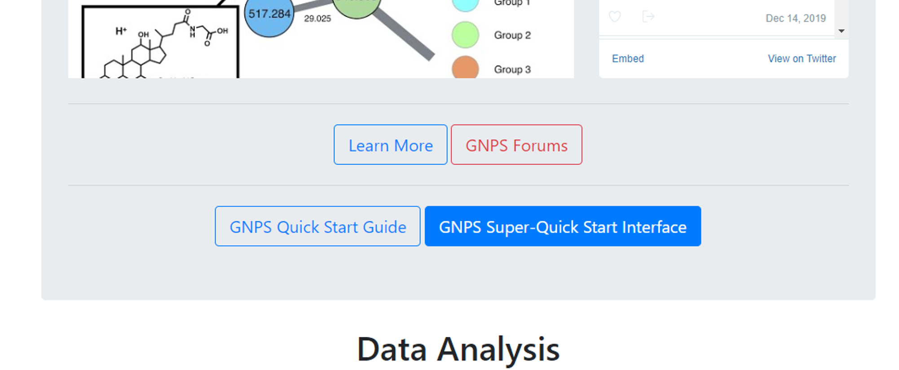
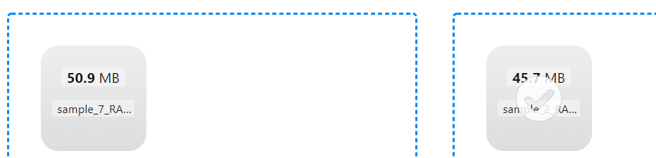
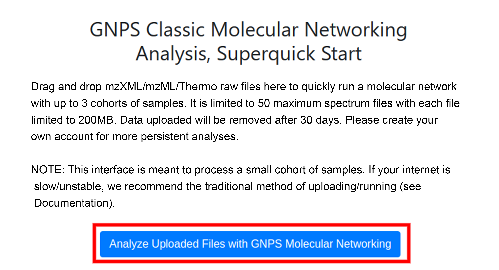
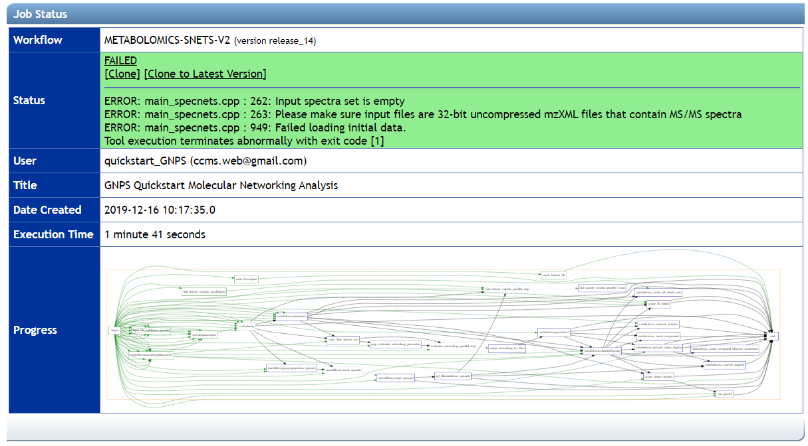

Superquick Start Guide
The Superquick start interface enables you to rapidly explore your data without having to create an account or install any software besides your web browser and data conversion programs.
No log-in required
IMPORTANT!: The limitations to this method is that the files uploaded will not reside in your own account (though no one else can see them) and will be removed on a monthly basis. Please create your own account for more persistent and reproducible analyses.
You would be able to use the Super quickstart interface if you have the following requirements:
- The format of your files is mzXML/mzML/Thermo raw files.
- You have less than 3 cohorts of samples.
- Each file has a maximum of 50 spectrum files.
- Each file has less than 200MB.
Super-Quick Start Interface
The Super-Quick Start Interface supports both Classical Molecular Networking and Feature-based Molecular Networking.
On the GNPS homepage navigate to the super-quick start button

- Classic Molecular Networking (see the detailed documentation) - Analyze a few dozen samples in up to 3 cohorts
- Feature Based Molecular Networking (see the detailed documentation) - Analyze molecular networks out of your favorite LC-MS feature detection/alignment software
Classic Molecular Networking
Please navigate to the super quickstart page to begin with Classic Molecular Networking!
The standard Classic Molecular Networking analysis start page can be accessed here
Converting Data
Convert vendor formats to open formats using MSConvert locally or using the GNPS format conversion tool. Checkout this documentation.
Selecting Files
Simply drag and drop your mass spectrometry files (mzML, mzXML, or MGF) into the appropriate cohorts you want to compare. It is required to upload files to Cohort Group 1. Additional Groups can be used (to separate control and treatment samples, for example).

Wait until each file is loaded, as shown here:

Analyze Files
Once files have been uploaded into appropriate cohorts, enter your email and click "Analyze Uploaded Files with GNPS Molecular Networking". Entering your email will give you a means of retrieving the job at a later time or if you close the browser.

This will bring you to a GNPS workflow status page. If you entered your email, you will receive a notification once the analysis job is complete. If you did not enter an email, save the URL of the analysis as this will be the only way for you to find the analysis again.
Note: If you drag vendor proprietary files (e.g. not mzML/mzXML) you will be able to start the job, however it will fail, as shown here:

Results
You will receive an email when the job is complete if you entered it prior to submission. To understand the results, please refer to the analysis section of the standard quickstart guide.
Feature Based Molecular Networking
Please navigate to the super quickstart page to begin with Feature Based Molecular Networking!
The standard Feature Based Molecular Networking analysis start page can also be started here: Feature Based Molecular Networking
Feature Based Molecular Networking Documentation
Selecting Files
Simply drag and drop the files generated by your feature detection and alignment tool:
- the feature quantification table (.CSV file, or mzTab-M).
- the MS/MS spectral summary (MGF file or MSP file (Progenesis QI), or mzML (for mzTab-M).
- (Optional) Sample metadata file - The format can be found here
- (Optional) Additional features edge generated externally - See the documentation.
Analyze your Files
Once files have been uploaded, enter your email and click "Analyze Uploaded Files with GNPS Molecular Networking".
This will bring you to a GNPS workflow status page. If you entered your email, you will receive a notification once the analysis job is complete. If you did not enter an email, save the URL of the analysis as this will be the only way for you to find the analysis again. If you entered your GNPS log-in credentials then the job will be saved to your account.
Results
To understand the results, please refer to the feature based molecular networking page.